Introducción a VirtualBox#
En estos ejercicios vamos a crear una máquina virtual, clonarla y conectar las dos máquinas con los distintos modos de red de VirtualBox: NAT, adaptador puente, Red NAT y red interna.
Usaremos DRBL Live, una distribución que arranca desde la ISO sin necesidad de instalarla, así que podemos centrarnos en VirtualBox y no en el sistema operativo.
Nota
DRBL Live no guarda nada en el disco: cada vez que reinicies la máquina virtual tendrás que volver a configurar la IP, la contraseña del usuario user y el teclado.
Si haces los ejercicios con un portátil y pones el adaptador en modo puente, deja la IP por DHCP.
Ejercicio 1: NAT#
Descárgate la ISO de DRBL Live de https://drbl.org/download/, la última versión estable para arquitectura de 64 bits.
Crea una máquina virtual llamada DRBL, de tipo Linux y versión Other Linux (64-bit), con:
Memoria: 1024 MB
Disco duro VDI reservado dinámicamente de 100 GB
Memoria de vídeo: 128 MB
Red: NAT
Almacenamiento/Controlador: IDE/disco (Vacío)/Seleccionar archivo de disco, y carga la ISO que te has bajado
Inicia desde la opción DRBL Live (Default settings). Si tienes problemas, prueba con:
Other modes of DRBL Live
DRBL Live (Safe graphic settings, vga=normal)
Policy for handling keymaps: 2
[0] (pulsa Enter)
Sube un pantallazo en el que se vea:
El test CPU N-Queens, que encontrarás en Applications/System/System Profiler and Benchmark
La salida de los siguientes comandos:
ip a ping -c2 8.8.8.8 echo tunombre
Ayuda: para poner el teclado en español, setxkbmap -layout es
Ejemplo de pantallazo:
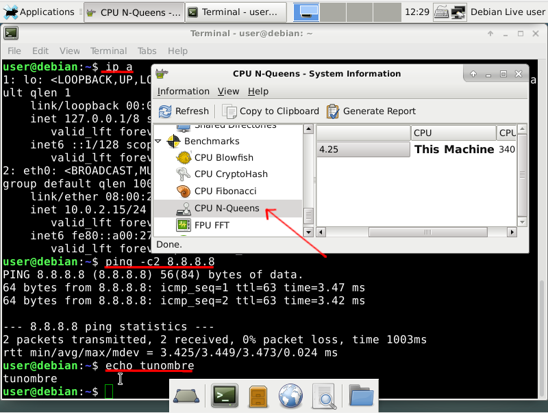
Ejercicio 2: Disco duro#
Crea una clonación enlazada de la MV DRBL llamada DRBL_clonada. En Política de dirección MAC elige Generar nuevas direcciones MAC para todos los adaptadores de red: si las dos máquinas tienen la misma MAC, tendrás problemas de red cuando estén encendidas a la vez (ver VirtualBox)
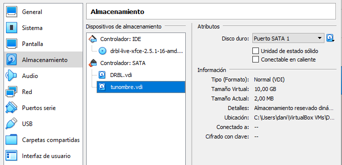
Añade al clon enlazado un nuevo disco duro de 10 GB llamado tunombre.vdi (Configuración/Almacenamiento/Controlador SATA/Añadir disco duro)
Sube un pantallazo en el que se vea la salida de
sudo fdisk -len las dos máquinas virtuales (en el clon aparece el disco nuevo de 10 GB) y la configuración de almacenamiento del clon con el disco tunombre.vdi, como se muestra a continuación:
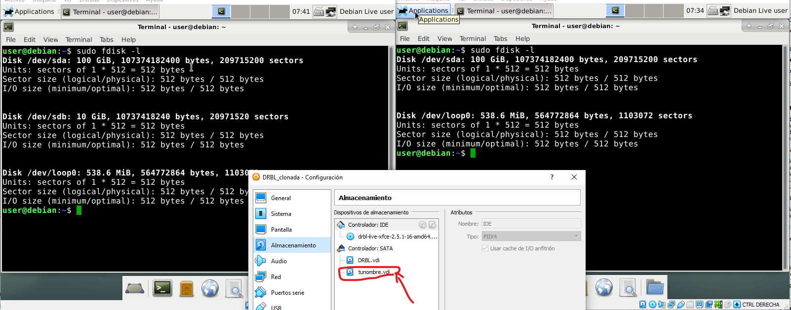
Ejercicio 3: Modo puente#
Mira la IP de tu equipo con
ipconfigoip a, según el anfitrión sea Windows o GNU/Linux. X e Y son los dos últimos números de esa IP; por ejemplo, en mi caso la IP es 10.2.4.100, así que X = 4 e Y = 100: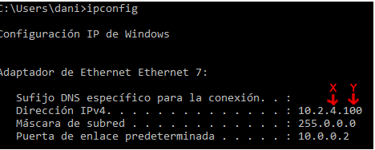
Pon el adaptador de las dos máquinas virtuales en modo puente
Configura la red de las máquinas virtuales con estos datos (en mi caso, 10.4.4.100 para DRBL y 10.3.4.100 para DRBL_clonada):
DRBL
DRBL_clonada
IP
10.4.X.Y
10.3.X.Y
Netmask
255.0.0.0
255.0.0.0
Gateway
10.0.0.2
10.0.0.2
DNS
8.8.8.8
8.8.8.8
Para poner la IP fija en DRBL, abre Wicd Network Manager, pulsa en Properties de la red cableada y marca Use Static IPs. El DNS va en DNS server 1 (en la captura está puesto, por error, en DNS domain):
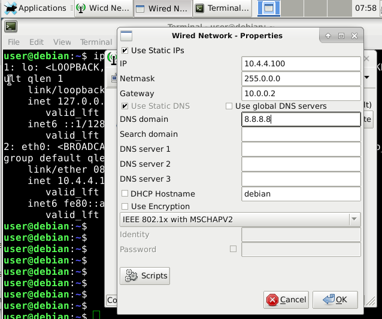
Haz un ping desde la MV DRBL_clonada (10.3.X.Y) a la MV DRBL (10.4.X.Y) y sube un pantallazo en el que se vean el ping y las tres IP (anfitrión y las dos máquinas virtuales)
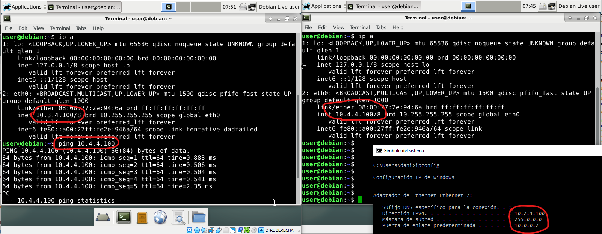
Ejercicio 4: SSH#
Comprueba que el servidor de ssh está instalado en la máquina virtual DRBL (10.4.X.Y). En DRBL Live ya viene instalado; en otra distribución lo instalarías con:
sudo apt-get install openssh-server
Reinicia el demonio de ssh:
sudo systemctl restart ssh
Asigna una contraseña al usuario user:
sudo passwd user
Conéctate desde DRBL_clonada (10.3.X.Y). Como en las dos máquinas el usuario es user, no hace falta ponerlo:
ssh 10.4.X.Y
Haz un
lsen la 10.4.X.YDesde la terminal de la 10.3.X.Y que está conectada por ssh a la 10.4.X.Y, crea una carpeta llamada tunombre (
mkdir tunombre)Haz un
lsdesde la 10.4.X.Y para comprobar que se ha creadoSube un pantallazo como el siguiente, en el que aparezcan las IP y la carpeta creada con tu nombre:
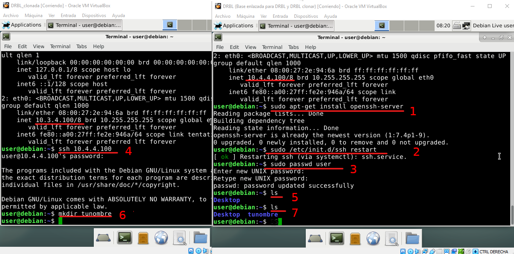
Ejercicio 5: SSH desde el anfitrión#
Conéctate por ssh a la 10.4.X.Y desde el anfitrión, con una terminal de PowerShell si es Windows o con una terminal normal si es GNU/Linux:
ssh user@10.4.X.Y
Crea una carpeta llamada tuapellido
Sube un pantallazo como el siguiente:
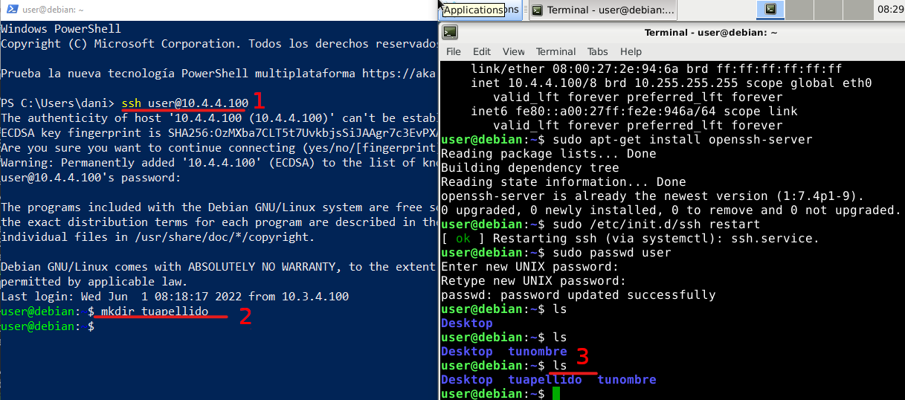
Ejercicio 6: Red NAT#
Crea, o comprueba que está creada, la red NatNetwork en Archivo/Herramientas/Administrador de red
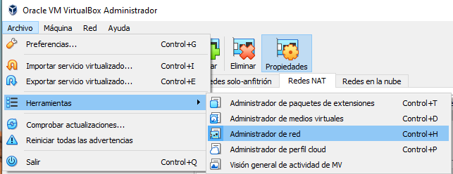
En la pestaña Redes NAT, pulsa en Crear y desmarca Habilitar DHCP, porque vamos a poner las IP a mano:
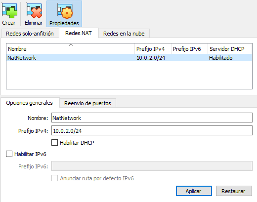
Cambia las dos máquinas virtuales a esta red: en la configuración de cada máquina virtual, Red/Conectado a: Red NAT
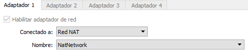
Configura las IP de las dos máquinas, con gateway 10.0.2.1:
DRBL_clonada: 10.0.2.2/24
DRBL: 10.0.2.3/24
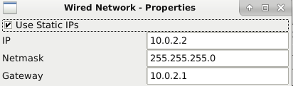
Ejecuta en DRBL_clonada el comando:
export PS1="tunombre$ "
y en DRBL:
export PS1="tuapellido$ "
Sube un pantallazo donde se vea que se hacen ping entre las dos (
ping -c2 ...) y que tienen internet (ping -c2 8.8.8.8)
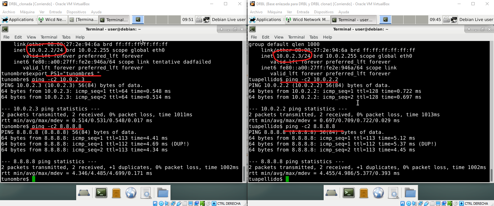
Ejercicio 7: Red NAT con reenvío de puertos#
Con la Red NAT, las máquinas virtuales salen a internet, pero desde el anfitrión no podemos llegar a ellas. Para eso está el reenvío de puertos: lo que llegue a un puerto del anfitrión se redirige a un puerto de una máquina virtual.
Seguimos con la red NatNetwork del ejercicio anterior. Cambia la IP de DRBL_clonada por 10.0.2.4/24
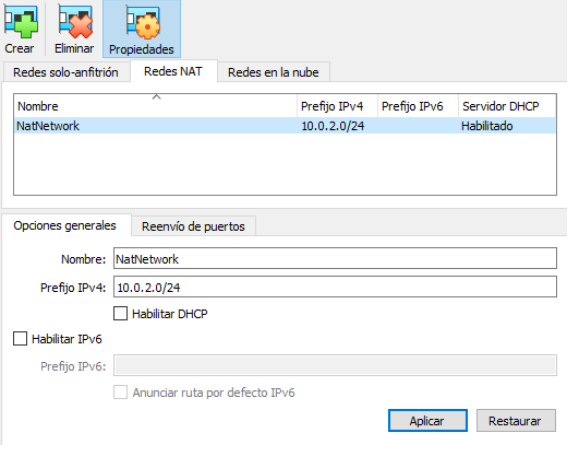
En la pestaña Reenvío de puertos de NatNetwork, configura la siguiente regla, del puerto 2222 del anfitrión al puerto 22 (ssh) de DRBL_clonada:
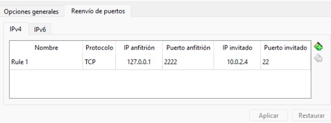
Configura el servidor de ssh de DRBL_clonada como en el ejercicio 4 y conéctate desde el anfitrión usando el puerto 2222:
ssh -p2222 user@127.0.0.1
Sube un pantallazo como el siguiente, cambiando tunombre por tu nombre:
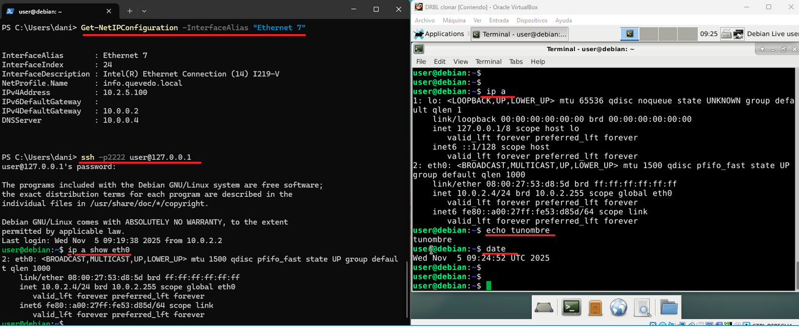
Ejercicio 8: Red interna#
Cambia las dos máquinas virtuales de la Red NAT a una Red interna llamada intnet, sin cambiar la configuración de IP
Comprueba que las máquinas se hacen ping entre ellas, porque están en la misma red, pero que ya no tienen internet (
ping -c2 8.8.8.8). Aunque siguen teniendo configurada la puerta de enlace 10.0.2.1, en una red interna no hay ningún router de VirtualBox que la tenga, así que no hay salida al exterior. Esta es la principal diferencia con la Red NAT.
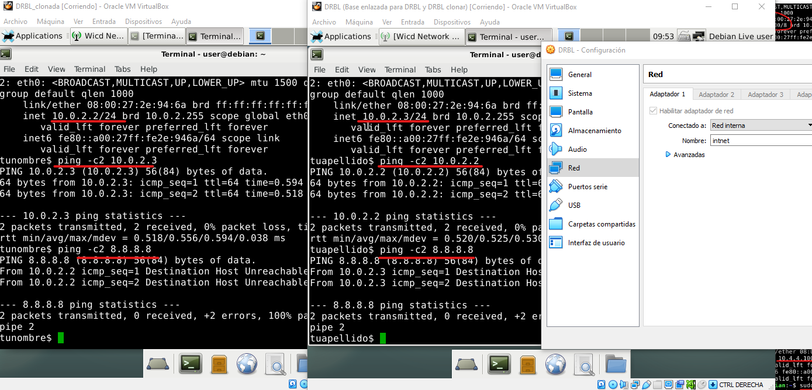